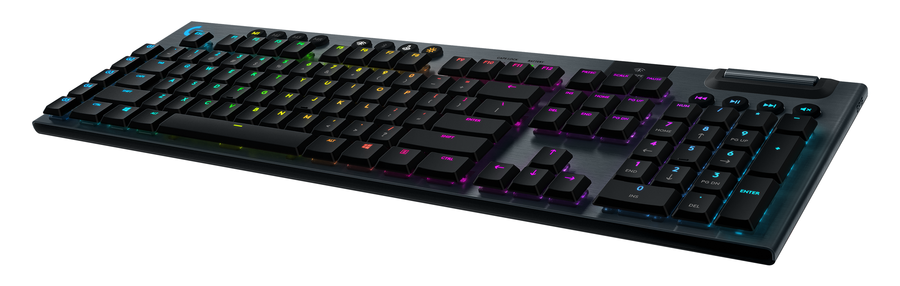

ゲーマーTECNOLOGIA DE PONTA LOGITECHゲーマー

Logitech G Pro Wireless
A linha G Pro da Logitech já é conhecida da comunidade por ter periféricos de alta qualidade, e o mouse não fica atrás. Esse modelo tem sensor Hero 16K e conexão sem fio com tempo de resposta de apenas 1 ms, então o usuário tem o mesmo desempenho de um mouse com fio.

Logitech G915 LIGHTSPEED
O G915 possui design sofisticado e teclas mecânicas com tecnologia avançada sem fio LIGHTSPEED, um novo nível para gamers profissionais. Tenha até 30 horas de jogo sem parar com uma carga completa.

Logitech G935
O Logitech G935 possui a tecnologia DTS Headphone: X 2.0. Ela fornece um som surround 7.1 que potencializa o desempenho de áudio dentro dos jogos. Seus drivers Pro-G de 50 mm proporcionam mais detalhes sonoros, com mais clareza e profundidade em qualquer volume.